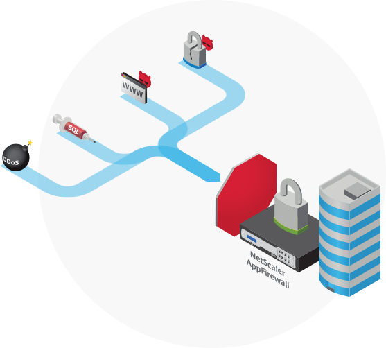
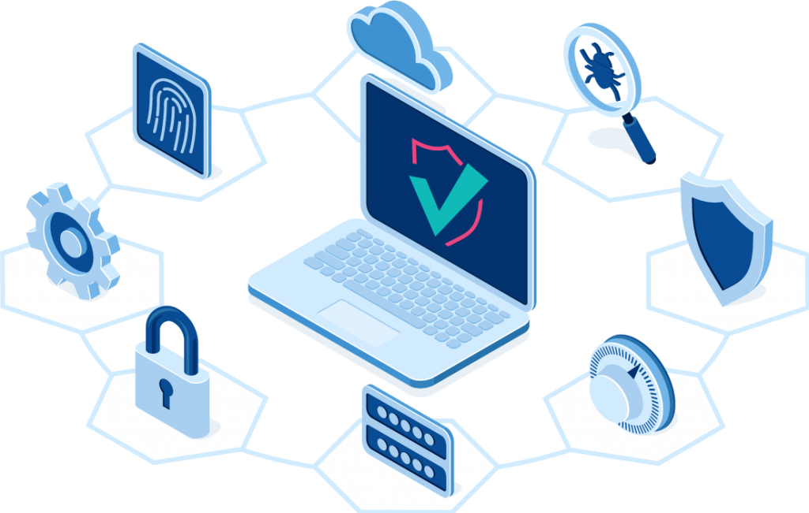
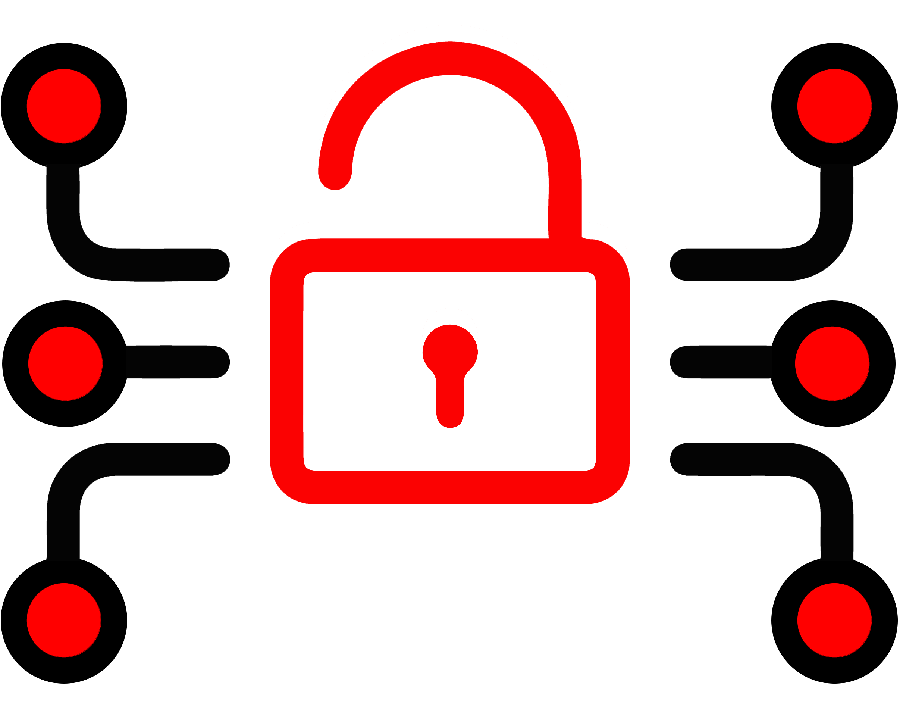
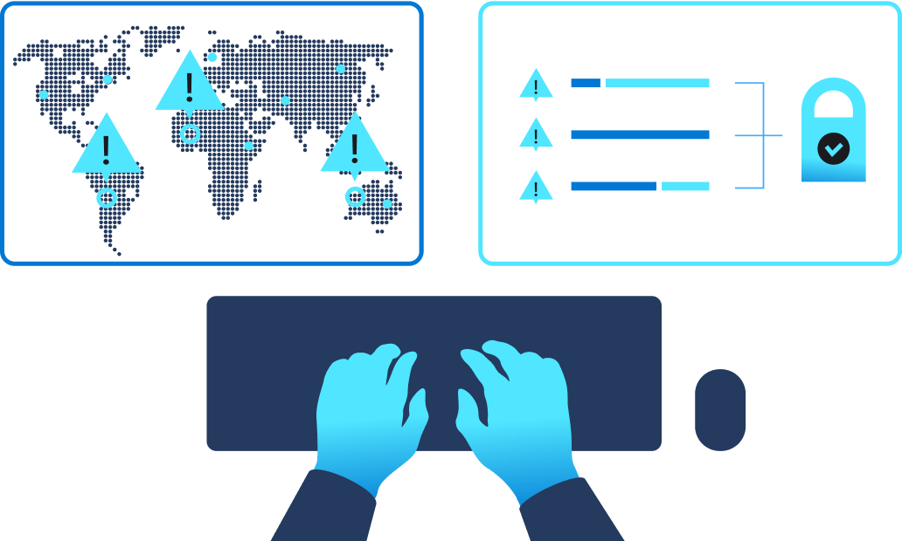
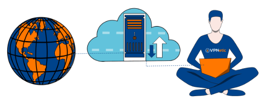
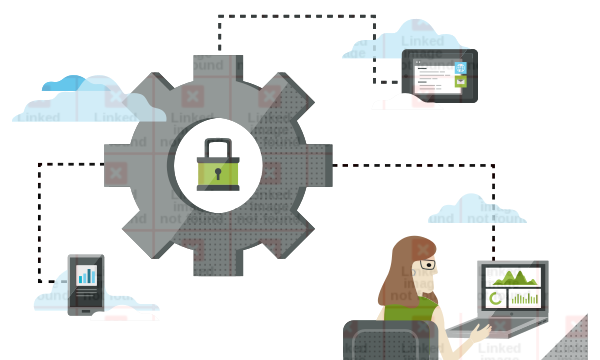
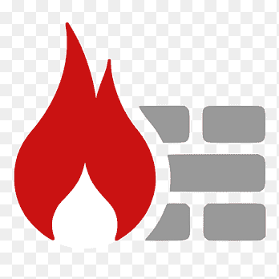

¿Qué es la seguridad de red?
la seguridad de red se define con mayor frecuencia como un subconjunto de la ciberseguridad.
Usando la tradicional "analogía del castillo y el foso" o un enfoque de seguridad basado en el perímetro, en el que su organización es su castillo y los datos almacenados
dentro del castillo son las joyas de la corona, la seguridad de red se preocupa más por la seguridad dentro del muros de castillo.
TIPOS DE SEGURIDAD DE RED
Protección firewall
Un firewall es un programa de software o un dispositivo de hardware que evita que usuarios no autorizados accedan a su red, impidiendo que ingrese tráfico sospechoso y permitiendo que fluya tráfico legítimo. Hay varios tipos de firewall con diferentes niveles de seguridad, que van desde simples cortafuegos de filtrado de paquetes hasta servidores proxy y cortafuegos complejos de última generación que utilizan inteligencia artificial y aprendizaje automático para comparar y analizar la información a medida que intenta pasar..

DETECCIÓN Y PREVENCIÓN DE INTRUSIONES
Los sistemas de detección y prevención de intrusiones (IDPS) se pueden implementar directamente detrás de un firewall para proporcionar una segunda capa de defensa contra actores peligrosos. Trabajando normalmente en paralelo con su predecesor, el sistema de defensa contra intrusiones más pasivo (IDS), un IDPS se encuentra entre la dirección de origen y su destino, creando una parada adicional para el tráfico antes de que pueda ingresar a una red. Un IDPS avanzado puede incluso utilizar el aprendizaje automático y la inteligencia artificial para analizar instantáneamente los datos entrantes y activar un proceso automatizado, como hacer sonar una alarma, bloquear el tráfico desde la fuente o restablecer la conexión, si detecta una actividad sospechosa.

CONTROL DE ACCESO A LA RED (NAC)
Al estar en la primera línea de defensa, el control de acceso a la red hace exactamente eso: controla el acceso a su red. Usado con mayor frecuencia para "verificaciones de estado de punto final", el NAC puede examinar un dispositivo de punto final, como una computadora portátil o un teléfono inteligente, para asegurarse de que tenga la protección antivirus adecuada, un nivel de actualización del sistema adecuado y la configuración correcta antes de que pueda ingresar. El NAC también se puede programar para un "acceso basado en roles", en el que el acceso del usuario está restringido en función de su perfil para que, una vez dentro de la red, solo puedan acceder a archivos o datos aprobados.

SEGURIDAD EN LA NUBE
La seguridad en la nube protege los recursos en línea, como datos confidenciales, aplicaciones, IP virtualizados y servicios, de filtraciones, pérdidas o robos. Mantener seguros los sistemas basados en la nube requiere políticas de seguridad sólidas, así como la superposición de métodos de seguridad como la arquitectura de firewall, los controles de acceso, las redes privadas virtuales (VPN), la encriptación o enmascaramiento de datos, el software de inteligencia de amenazas y los programas de recuperación de desastres.

REDES PRIVADAS VIRTUALES (VPN)
Una red privada virtual (VPN) es un software que protege la identidad de un usuario cifrando sus datos y enmascarando su dirección IP y ubicación. Cuando alguien usa una VPN, ya no se conecta directamente a Internet, sino a un servidor seguro que luego se conecta a Internet en su nombre. Las VPN se utilizan de forma rutinaria en las empresas y son cada vez más necesarias para las personas, especialmente aquellas que utilizan el WiFi público en cafeterías o aeropuertos. Las VPN protegen a los usuarios de los hackers, que pueden robar cualquier cosa, desde correos electrónicos y fotos hasta números de tarjetas de crédito o la identidad de un usuario.

PREVENCIÍN DE PERDIDA DE DATOS (DLP)
La prevención de pérdida de datos (a veces denominada "prevención de filtración de datos") es un conjunto de estrategias y herramientas implementadas para garantizar que los usuarios de puntos finales no compartan accidental o maliciosamente información confidencial fuera de una red corporativa. A menudo implementados para cumplir con las regulaciones gubernamentales sobre datos críticos (como tarjetas de crédito, información financiera o de salud), las políticas y el software de DLP monitorean y controlan las actividades de los puntos finales en las redes corporativas y en la nube, utilizando alertas, cifrado y otras acciones para proteger los datos en movimiento, en uso y en reposo.
PROTECCIÓN DE PUNTOS FINALES
La seguridad de puntos finales, que a menudo requiere un enfoque multicapa, implica la protección de todos los puntos finales (computadoras portátiles, tabletas, teléfonos inteligentes, dispositivos portátiles y otros dispositivos móviles) que se conectan a su red. Aunque proteger los puntos finales es una tarea compleja, un servicio de seguridad administrado puede ayudar a mantener sus dispositivos, datos y red seguros mediante software antivirus, prevención de pérdida de datos, cifrado y otras medidas de seguridad efectivas.

GESTIÓN UNIFICADA DE AMENAZAS (UTM)
Con los dispositivos UTM, las organizaciones pueden reducir los costos y mejorar la capacidad de gestión de la protección y el monitoreo de la red utilizando múltiples herramientas de seguridad de la red, como firewalls, VPN, IDS, filtrado de contenido web y software antispam.
